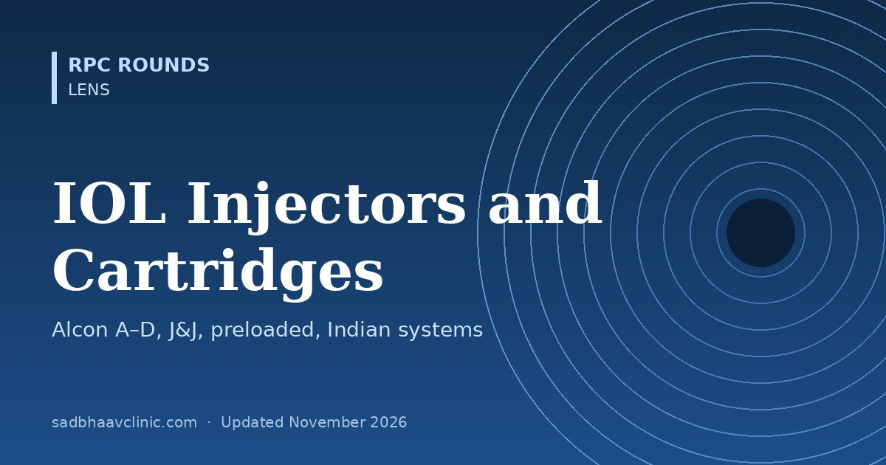

Last updated: November 2026
The cartridge decides how small your incision can be, whether the lens unfolds safely, and whether the wound stays watertight. Every company has its own injector and cartridge system, and each lens is approved for particular cartridges. This guide explains the parts, the Alcon A to D cartridges, preloaded and automated injectors, J&J, Zeiss and Medicel systems, the injectors supplied with Indian lenses, how to load, and what to do when things go wrong.
| Part | What it does | Notes |
|---|---|---|
| Injector (handpiece) | Pushes the lens through the cartridge | Reusable metal (screw or push type, autoclaved) or single-use plastic |
| Cartridge | Folds the lens and delivers it through its tip | Loading chamber with wings, a tapered tube and a bevelled nozzle; single use |
| Plunger tip | Contacts the lens | Soft silicone tips cushion the optic; a misaligned plunger can override or crush the optic |
| Preloaded injector | Lens is loaded in the factory | No handling of the lens; less risk of loading errors and contamination; fixed cartridge size |
| Automated injector | Motor or gas pushes the lens at a set speed | e.g. Alcon AutonoMe; smooth, controlled delivery |
Tip position matters. The incision size printed for a cartridge usually assumes the tip goes into the wound. With a wound-assisted technique, the tip rests just at the wound lip and the lens is pushed through the tunnel, allowing a smaller incision, but it stretches the wound more and needs a well-formed tunnel.
The letters describe tip size, from largest (A) to smallest (D). Monarch handpieces are reusable; cartridges are single use. Each AcrySof or Clareon lens's directions for use list the cartridges and power ranges it is qualified for, so check the box insert before you choose.
| Cartridge | Tip | Used for | Typical incision |
|---|---|---|---|
| A | Largest | Older large three-piece lenses; rarely used now | Larger than 3 mm |
| B | "Big" | Three-piece acrylic IOLs (e.g. for the sulcus) and special-order high plus single-piece lenses; has a peg that holds the trailing haptic | About 3.0 mm |
| C | "Compact" | Single-piece AcrySof lenses, including higher powers; three-piece lenses with a special loading method (trailing haptic left outside the tip) | About 2.6–2.75 mm |
| D | "Diminutive" | Most single-piece AcrySof lenses in the usual power range; works best with thinner aspheric designs | About 2.2–2.4 mm |
| System | Lenses | Incision | Notes |
|---|---|---|---|
| UNFOLDER Platinum 1 Series (handpiece DK7796 with cartridge 1MTEC30) | TECNIS acrylic single-piece IOLs, into the capsular bag only | 2.2–2.4 mm | Rear-loading cartridge; screw-style delivery |
| UNFOLDER Emerald XL | TECNIS single-piece and three-piece lenses | 2.8 mm | Single-use cartridge |
| Preloaded: TECNIS Simplicity and iTec | TECNIS single-piece lenses | About 2.2–2.4 mm | No loading; iTec stretched the wound slightly more than AutonoMe or UltraSert in one laboratory test |
From the Platinum 1 Series instructions: fill the whole cartridge with viscoelastic (J&J recommends its HEALON family; not balanced salt solution, and not methylcellulose OVDs); grasp the lens only by the optic edge, anterior side up; tuck the leading haptic, then the trailing haptic over the optic; discard if the lens has been folded in the cartridge for more than 5 minutes; inject high powers more slowly in a cold theatre; store cartridges between 5 and 30°C.
| System | Type | Incision | Notes |
|---|---|---|---|
| Zeiss BLUEMIXS 180 | Preloaded | 1.8 mm | For Zeiss micro-incision hydrophilic lenses (e.g. AT LISA tri, CT ASPHINA MP models) |
| Zeiss AT.Shooter A1-2000 | Reusable injector | 1.8 or 2.2 mm | With AT.Smart or VISCOJECT-BIO cartridges |
| Medicel VISCOJECT-BIO | Single-use injector set | 1.8 or 2.2 mm | Used for many hydrophilic lenses |
| Medicel ACCUJECT | Single-use injector with built-in cartridge | Varies by model | Supplied with many lenses from different companies; load OVD first, notched haptics at 1 and 7 o'clock, wait for the click-lock |
| Hoya iSert | Preloaded | About 2.2 mm (model dependent) | e.g. Vivinex iSert |
| Situation | Usual choice |
|---|---|
| Single-piece hydrophobic lens, usual power | The smallest qualified cartridge (e.g. Alcon D, J&J Platinum 1) |
| High-power single-piece lens (thick optic) | A larger cartridge (e.g. Alcon C) or the power limit in the lens insert |
| Three-piece lens for the sulcus or a capsular complication | Alcon B (or C with special loading), J&J Emerald, or the matched three-piece cartridge |
| Hydrophilic micro-incision lens | The 1.8 or 2.2 mm cartridge listed for that lens |
| Toric or multifocal premium lens | Preloaded injector if available, to avoid loading damage; check the insert |
| Cold theatre or stiff lens material | Warm the lens to room temperature and inject slowly |
Step by step
| Problem | Cause | Prevention or rescue |
|---|---|---|
| Cartridge tip cracks or splits | Wrong cartridge for the power, cold lens, too little OVD, injecting too fast | Stop; remove the cartridge; reload a new lens and cartridge; use a larger cartridge |
| Trailing haptic broken or crushed | Haptic caught by the plunger or wings | Load carefully; check from the side before injecting; replace the lens if damaged |
| Lens comes out upside down | Loaded posterior side up, or cartridge rotated | Check orientation marks before injecting; flip in the bag only with care |
| Plunger overrides the optic | Misaligned plunger, too little OVD | Check plunger position after advancing; withdraw and reload |
| Lens shoots out uncontrolled | Pushing hard against resistance, then sudden release | Inject smoothly; reduce speed as the optic exits |
| Wound stretch, leak or tear | Tip too large for the incision, wound-assisted push in a short tunnel | Choose the right cartridge; check the wound; suture if it leaks |
| Descemet membrane detachment | Tip entered under Descemet membrane | Keep the bevel in the plane of the tunnel; recognise early and tamponade with air if needed |
| Optic scratches or marks | Forceps damage, dry cartridge, wrong cartridge | Use smooth forceps, enough OVD and the matched cartridge |
Pearls
Common mistakes
Related: IOL Lens Types Explained: Monofocal to Trifocal, Toric IOL Pearls: Rotation, Posterior Corneal Astigmatism and Marking, Sulcus IOL Power Adjustment: How Much to Reduce and When Not To, Posterior Capsule Opacification, Nd:YAG Capsulotomy and IOL Dislocation, Cataract Pre-operative Risk Checklist: Spot the Difficult Case.
📘 Want more exam-ready material? See Most Commons in Ophthalmology on Kindle, or browse all my books.
Looking for an eye specialist in Ahmedabad? Cataract surgery at Sadbhaav or book a consultation with Dr. Dhaval Patel.